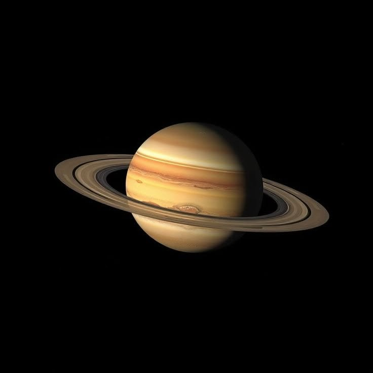
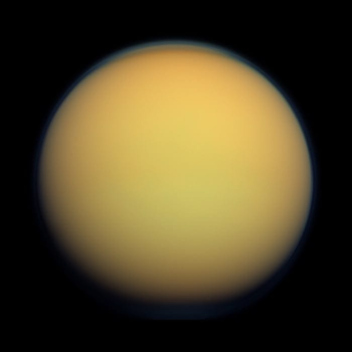
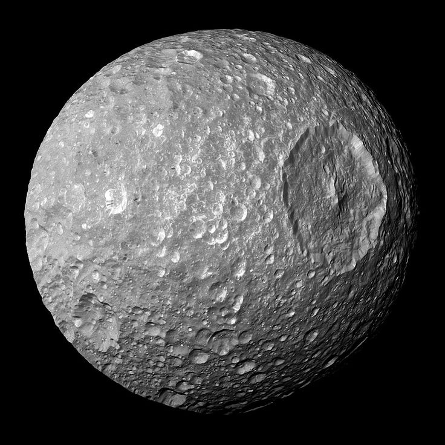
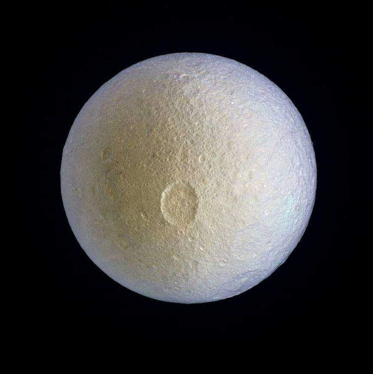
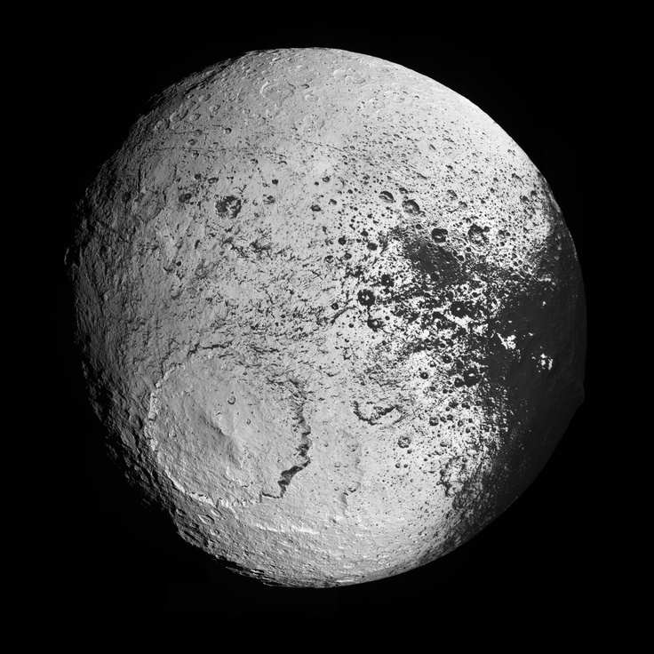

Saturno

Saturno é o sexto planeta do Sistema Solar e o segundo maior.
O planeta é conhecido pelos seus enormes anéis formados por gelo
e poeira espacial.
Curiosidade: Um dia em Saturno dura apenas cerca de 10 horas.
Titã

Titã é a maior lua de Saturno e possui uma atmosfera muito densa.
Ela é uma das luas mais estudadas pelos cientistas.
Curiosidade: Titã possui lagos de metano líquido.
Mimas

Mimas ficou famosa por possuir uma gigantesca cratera chamada
Herschel.
Curiosidade: Muitas pessoas dizem que Mimas parece a Estrela da Morte.
Encélado

Encélado possui uma superfície extremamente brilhante coberta
por gelo.
Curiosidade: Encélado reflete quase toda a luz do Sol.
Jápeto

Jápeto é conhecida por possuir dois lados com cores muito diferentes.
Curiosidade: Um lado de Jápeto é muito escuro e o outro muito claro.